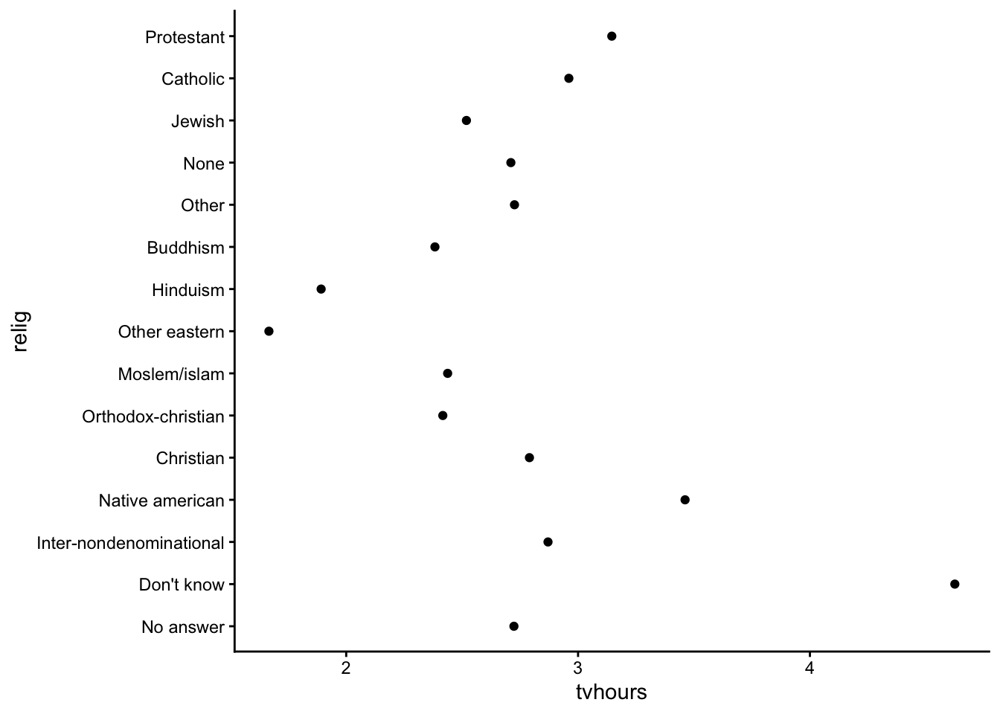
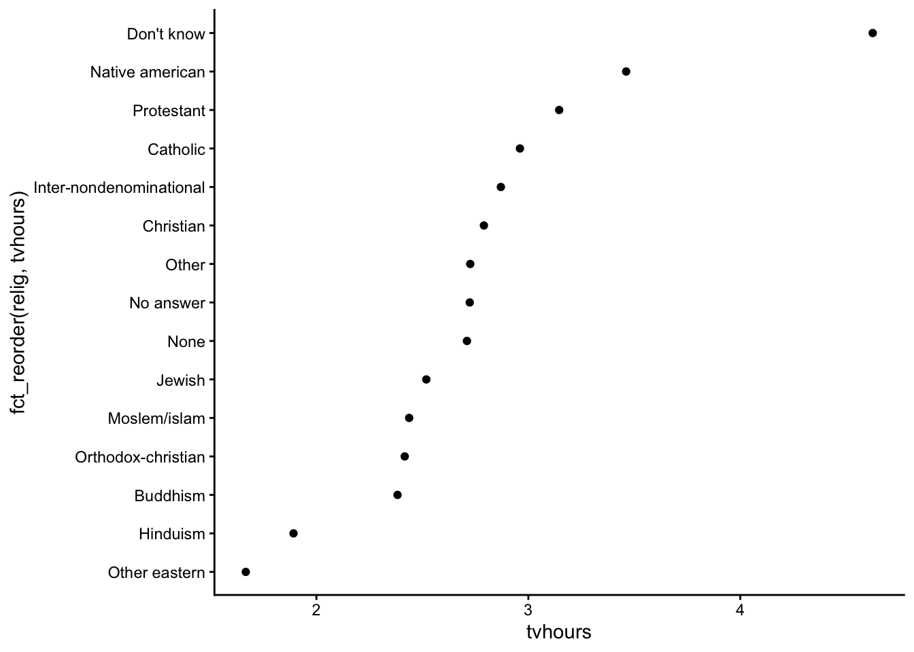
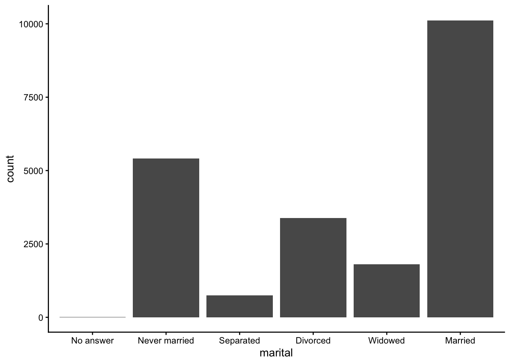
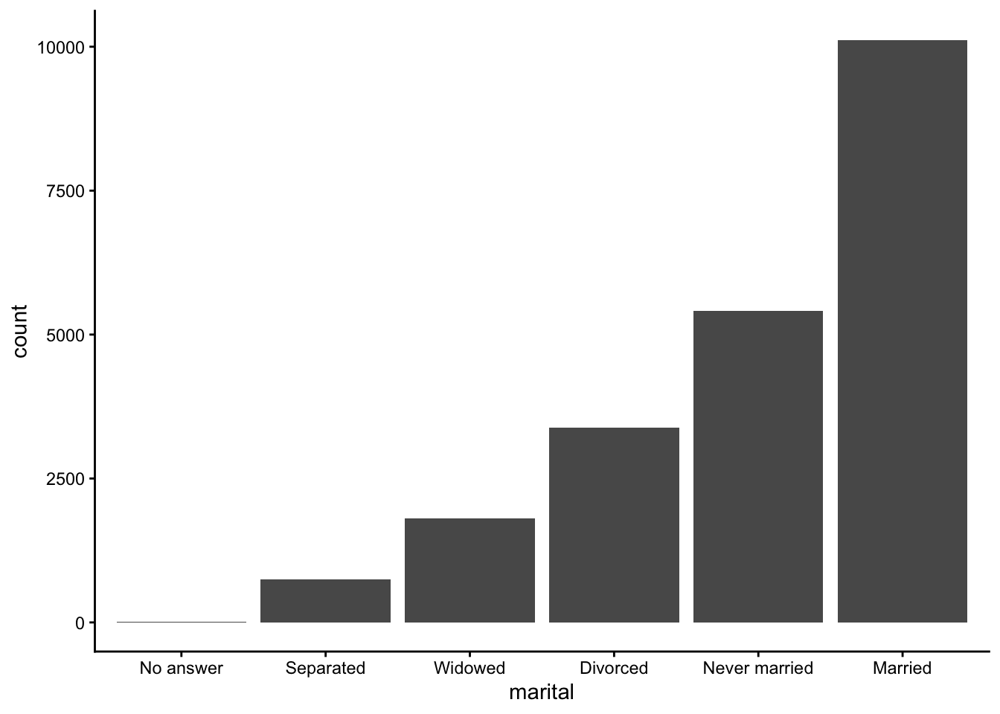

6 Adv Data wrangling I
🧩 Learning Goals
By the end of this lesson, you should be able to:
- Determine the class of a given object and identify concerns to be wary of when manipulating an object of that class (numerics, logicals, factors, dates, strings, data.frames)
- Explain what vector recycling is, when it can be a problem, and how to avoid those problems
- Use a variety of functions to wrangle numerical and logical data
- Extract date-time information using the
lubridatepackage - Use the
forcatspackage to wrangle factor data
Helpful Cheatsheets
RStudio (Posit) maintains a collection of wonderful cheatsheets. The following will be helpful:
Data Wrangling Verbs (from Stat/Comp 112)
-
mutate(): creates/changes columns/elements in a data frame/tibble -
select(): keeps subset of columns/elements in a data frame/tibble -
filter(): keeps subsets of rows in a data frame/tibble -
arrange(): sorts rows in a data frame/tibble -
group_by(): internally groups rows in data frame/tibble by values in 1 or more columns/elements -
summarize(): collapses/combines information across rows using functions such asn(),sum(),mean(),min(),max(),median(),sd() -
count(): shortcut forgroup_by() |> summarize(n = n()) -
left_join(): mutating join of two data frames/tibbles keeping all rows in left data frame -
full_join(): mutating join of two data frames/tibbles keeping all rows in both data frames -
inner_join(): mutating join of two data frames/tibbles keeping rows in left data frame that find match in right -
semi_join(): filtering join of two data frames/tibbles keeping rows in left data frame that find match in right -
anti_join(): filtering join of two data frames/tibbles keeping rows in left data frame that do not find match in right -
pivot_wider(): rearrange values from two columns to many(one column becomes the names of new variables, one column becomes the values of the new variables) -
pivot_longer(): rearrange values from many columns to two (the names of the columns go to one new variable, the values of the columns go to a second new variable)
Vectors
An atomic vector is a storage container in R where all elements in the container are of the same type. The types that are relevant to data science are:
-
logical(also known as boolean) - numbers
integer-
numericfloating point (also known as double)
-
characterstring -
Dateand date-time (saved asPOSIXct) factor
Function documentation will refer to vectors frequently. See examples below:
-
ggplot2::scale_x_continuous()-
breaks: A numeric vector of positions -
labels: A character vector giving labels (must be same length as breaks)
-
-
shiny::sliderInput()-
value: The initial value of the slider. A length one vector will create a regular slider; a length two vector will create a double-ended range slider.
-
When you need a vector, you can create one manually using
-
c(): the combine function
Or you can create one based on available data using
-
dataset |> mutate(newvar = variable > 5) |> pull(newvar): taking one column out of a dataset -
dataset |> pull(variable) |> unique(): taking one column out of a dataset and finding unique values
Logicals
What does a logical vector look like?
You will often create logical vectors with comparison operators: >, <, <=, >=, ==, !=.
[1] TRUE FALSE FALSE FALSE[1] TRUE TRUE FALSE FALSE[1] FALSE FALSE FALSE TRUE[1] FALSE FALSE TRUE TRUE[1] FALSE FALSE FALSE TRUE[1] TRUE TRUE TRUE FALSEWhen you want to check for a set containment, the %in% operator is the correct way to do this, == is not.
Warning in x == c(1, 2, 4): longer object length is not a multiple of shorter
object length[1] TRUE TRUE FALSE FALSE[1] TRUE TRUE FALSE TRUEThe Warning: longer object length is not a multiple of shorter object length is a manifestation of vector recycling.
In R, if two vectors are being combined or compared, the shorter one will be repeated (recycled) to match the length of the longer one–even if longer object length isn’t a multiple of the shorter object length. We can see the exact recycling that happens below:
Warning in x == c(1, 2, 4): longer object length is not a multiple of shorter
object length[1] TRUE TRUE FALSE FALSE[1] TRUE TRUE FALSE FALSELogical vectors can also be created with functions. is.na() is one useful example:
We can negate a logical object with !. We can combine logical objects with & (and) and | (or) logical operators.
[1] FALSE TRUE TRUE FALSE[1] TRUE FALSE FALSE TRUE[1] TRUE FALSE FALSE TRUEWe can summarize logical vectors with:
-
any(): Are ANY of the valuesTRUE? -
all(): Are ALL of the valuesTRUE? -
sum(): How many of the values areTRUE? -
mean(): What fraction of the values areTRUE?
[1] TRUE[1] TRUE[1] 1[1] 0.25if_else() and case_when() are functions that allow you to return values depending on the value of a logical vector. You’ll explore the documentation for these in the following exercises.
Exercises
Load the diamonds dataset, and filter to the first 1000 diamonds.
Using tidyverse functions, complete the following:
- Subset to diamonds that are less than 400 dollars or more than 10000 dollars.
- Subset to diamonds that are between 500 and 600 dollars (inclusive).
- How many diamonds are of either Fair, Premium, or Ideal cut (a total count)? What fraction of diamonds are of Fair, Premium, or Ideal cut?
- First, do this a wrong way with
==. Predict the warning message that you will receive. - Second, do this the correct way with an appropriate logical operator.
- First, do this a wrong way with
- Are there any diamonds of Fair cut that are more than $3000? Are all diamonds of Ideal cut more than $2000?
- Create two new categorized versions of
priceby looking up the documentation forif_else()andcase_when():-
price_cat1: “low” if price is less than 500 and “high” otherwise -
price_cat2: “low” if price is less than 500, “medium” if price is between 500 and 1000 dollars inclusive, and “high” otherwise.
-
# A tibble: 30 × 10
carat cut color clarity depth table price x y z
<dbl> <ord> <ord> <ord> <dbl> <dbl> <int> <dbl> <dbl> <dbl>
1 0.23 Ideal E SI2 61.5 55 326 3.95 3.98 2.43
2 0.21 Premium E SI1 59.8 61 326 3.89 3.84 2.31
3 0.23 Good E VS1 56.9 65 327 4.05 4.07 2.31
4 0.29 Premium I VS2 62.4 58 334 4.2 4.23 2.63
5 0.31 Good J SI2 63.3 58 335 4.34 4.35 2.75
6 0.24 Very Good J VVS2 62.8 57 336 3.94 3.96 2.48
7 0.24 Very Good I VVS1 62.3 57 336 3.95 3.98 2.47
8 0.26 Very Good H SI1 61.9 55 337 4.07 4.11 2.53
9 0.22 Fair E VS2 65.1 61 337 3.87 3.78 2.49
10 0.23 Very Good H VS1 59.4 61 338 4 4.05 2.39
# ℹ 20 more rows# A tibble: 90 × 10
carat cut color clarity depth table price x y z
<dbl> <ord> <ord> <ord> <dbl> <dbl> <int> <dbl> <dbl> <dbl>
1 0.35 Ideal I VS1 60.9 57 552 4.54 4.59 2.78
2 0.3 Premium D SI1 62.6 59 552 4.23 4.27 2.66
3 0.3 Ideal D SI1 62.5 57 552 4.29 4.32 2.69
4 0.3 Ideal D SI1 62.1 56 552 4.3 4.33 2.68
5 0.42 Premium I SI2 61.5 59 552 4.78 4.84 2.96
6 0.28 Ideal G VVS2 61.4 56 553 4.19 4.22 2.58
7 0.32 Ideal I VVS1 62 55.3 553 4.39 4.42 2.73
8 0.31 Very Good G SI1 63.3 57 553 4.33 4.3 2.73
9 0.31 Premium G SI1 61.8 58 553 4.35 4.32 2.68
10 0.24 Premium E VVS1 60.7 58 553 4.01 4.03 2.44
# ℹ 80 more rows# A tibble: 5 × 2
cut n
<ord> <int>
1 Fair 62
2 Good 89
3 Very Good 226
4 Premium 290
5 Ideal 333[1] FALSE[1] FALSE# A tibble: 1,000 × 11
carat cut color clarity depth table price x y z price_cat1
<dbl> <ord> <ord> <ord> <dbl> <dbl> <int> <dbl> <dbl> <dbl> <chr>
1 0.23 Ideal E SI2 61.5 55 326 3.95 3.98 2.43 low
2 0.21 Premium E SI1 59.8 61 326 3.89 3.84 2.31 low
3 0.23 Good E VS1 56.9 65 327 4.05 4.07 2.31 low
4 0.29 Premium I VS2 62.4 58 334 4.2 4.23 2.63 low
5 0.31 Good J SI2 63.3 58 335 4.34 4.35 2.75 low
6 0.24 Very Good J VVS2 62.8 57 336 3.94 3.96 2.48 low
7 0.24 Very Good I VVS1 62.3 57 336 3.95 3.98 2.47 low
8 0.26 Very Good H SI1 61.9 55 337 4.07 4.11 2.53 low
9 0.22 Fair E VS2 65.1 61 337 3.87 3.78 2.49 low
10 0.23 Very Good H VS1 59.4 61 338 4 4.05 2.39 low
# ℹ 990 more rowsCode
# A tibble: 1,000 × 11
carat cut color clarity depth table price x y z price_cat2
<dbl> <ord> <ord> <ord> <dbl> <dbl> <int> <dbl> <dbl> <dbl> <chr>
1 0.23 Ideal E SI2 61.5 55 326 3.95 3.98 2.43 low
2 0.21 Premium E SI1 59.8 61 326 3.89 3.84 2.31 low
3 0.23 Good E VS1 56.9 65 327 4.05 4.07 2.31 low
4 0.29 Premium I VS2 62.4 58 334 4.2 4.23 2.63 low
5 0.31 Good J SI2 63.3 58 335 4.34 4.35 2.75 low
6 0.24 Very Good J VVS2 62.8 57 336 3.94 3.96 2.48 low
7 0.24 Very Good I VVS1 62.3 57 336 3.95 3.98 2.47 low
8 0.26 Very Good H SI1 61.9 55 337 4.07 4.11 2.53 low
9 0.22 Fair E VS2 65.1 61 337 3.87 3.78 2.49 low
10 0.23 Very Good H VS1 59.4 61 338 4 4.05 2.39 low
# ℹ 990 more rowsNumerics
Numerical data can be of class integer or numeric (representing real numbers).
[1] 1 2 3[1] "integer"[1] 1 2 3[1] "numeric"The Numbers chapter in R4DS covers the following functions that are all useful for wrangling numeric data:
-
n(),n_distinct(): Counting and counting the number of unique values -
sum(is.na()): Counting the number of missing values -
min(),max() -
pmin(),pmax(): Get the min and max across several vectors - Integer division:
%/%. Remainder:%%-
121 %/% 100 = 1and121 %% 100 = 21
-
-
round(),floor(),ceiling(): Rounding functions (to a specified number of decimal places, to the largest integer below a number, to the smallest integer above a number) -
cut(): Cut a numerical vector into categories -
cumsum(),cummean(),cummin(),cummax(): Cumulative functions -
rank(): Provide the ranks of the numbers in a vector -
lead(), lag(): shift a vector by padding with NAs - Numerical summaries:
mean,median,min,max,quantile,sd,IQR- Note that all numerical summary functions have an
na.rmargument that should be set toTRUEif you have missing data.
- Note that all numerical summary functions have an
Exercises
Exercises will be on HW4.
The best way to add these functions and operators to your vocabulary is the need to recall them. Refer to the list of functions above as you try the exercises.
You will need to reference function documentation to look at arguments and look in the Examples section.
Dates
The lubridate package contains useful functions for working with dates and times. The lubridate function reference is a useful resource for finding the functions you need. We’ll take a brief tour of this reference page.
We’ll use the lakers dataset in the lubridate package to illustrate some examples.
# A tibble: 6 × 13
date opponent game_type time period etype team player result points type
<int> <chr> <chr> <chr> <int> <chr> <chr> <chr> <chr> <int> <chr>
1 2.01e7 POR home 12:00 1 jump… OFF "" "" 0 ""
2 2.01e7 POR home 11:39 1 shot LAL "Pau … "miss… 0 "hoo…
3 2.01e7 POR home 11:37 1 rebo… LAL "Vlad… "" 0 "off"
4 2.01e7 POR home 11:25 1 shot LAL "Dere… "miss… 0 "lay…
5 2.01e7 POR home 11:23 1 rebo… LAL "Pau … "" 0 "off"
6 2.01e7 POR home 11:22 1 shot LAL "Pau … "made" 2 "hoo…
# ℹ 2 more variables: x <int>, y <int>Below we use date-time parsing functions to represent the date and time variables with date-time classes:
Below we use extraction functions to get components of the date-time objects:
Code
# A tibble: 6 × 6
year month day day_of_week minute second
<dbl> <dbl> <int> <ord> <dbl> <dbl>
1 2008 10 28 Tue 12 0
2 2008 10 28 Tue 11 39
3 2008 10 28 Tue 11 37
4 2008 10 28 Tue 11 25
5 2008 10 28 Tue 11 23
6 2008 10 28 Tue 11 22Code
# A tibble: 6 × 5
# Groups: date, opponent, period [1]
date opponent time period diff_btw_plays_sec
<date> <chr> <Period> <int> <dbl>
1 2008-10-28 POR 12M 0S 1 NA
2 2008-10-28 POR 11M 39S 1 -21
3 2008-10-28 POR 11M 37S 1 -2
4 2008-10-28 POR 11M 25S 1 -12
5 2008-10-28 POR 11M 23S 1 -2
6 2008-10-28 POR 11M 22S 1 -1Exercises
Exercises will be on HW4.
Factors
Creating factors
In R, factors are made up of two components: the actual values of the data and the possible levels within the factor. Creating a factor requires supplying both pieces of information.
However, if we were to sort this vector, R would sort this vector alphabetically.
We can fix this sorting by creating a factor version of months. The levels argument is a character vector that specifies the unique values that the factor can take. The order of the values in levels defines the sorting of the factor.
[1] Mar Dec Jan Apr Jul
Levels: Jan Feb Mar Apr May Jun Jul Aug Sep Oct Nov Dec[1] Jan Mar Apr Jul Dec
Levels: Jan Feb Mar Apr May Jun Jul Aug Sep Oct Nov DecWhat if we try to create a factor with values that aren’t in the levels, eg, a typo in a month name?
[1] <NA> Mar
Levels: Jan Feb Mar Apr May Jun Jul Aug Sep Oct Nov DecBecause the NA is introduced silently (without any error or warnings), this can be dangerous. It might be better to use the fct() function in the forcats package instead:
[1] <NA> Mar
Levels: Jan Feb Mar Apr May Jun Jul Aug Sep Oct Nov DecReordering factors
We’ll use a subset of the General Social Survey (GSS) dataset available in the forcats pacakges.
# A tibble: 6 × 9
year marital age race rincome partyid relig denom tvhours
<int> <fct> <int> <fct> <fct> <fct> <fct> <fct> <int>
1 2000 Never married 26 White $8000 to 9999 Ind,near r… Prot… Sout… 12
2 2000 Divorced 48 White $8000 to 9999 Not str re… Prot… Bapt… NA
3 2000 Widowed 67 White Not applicable Independent Prot… No d… 2
4 2000 Never married 39 White Not applicable Ind,near r… Orth… Not … 4
5 2000 Divorced 25 White Not applicable Not str de… None Not … 1
6 2000 Married 25 White $20000 - 24999 Strong dem… Prot… Sout… NAReordering the levels of a factor can be useful in plotting when categories would benefit from being sorted in a particular way:
Code

We can use fct_reorder() in forcats.
- The first argument is the factor that you want to reorder the levels of
- The second argument determines how the factor is sorted (analogous to what you put inside
arrange()when sorting the rows of a data frame.)
Code

For bar plots, we can use fct_infreq() to reorder levels from most to least common. This can be combined with fct_rev() to reverse the order (least to most common):

Code

Modifying factor levels
We talked about reordering the levels of a factor–what about changing the values of the levels themselves?
For example, the names of the political parties in the GSS could use elaboration (“str” isn’t a great label for “strong”) and clean up:
# A tibble: 10 × 2
partyid n
<fct> <int>
1 No answer 154
2 Don't know 1
3 Other party 393
4 Strong republican 2314
5 Not str republican 3032
6 Ind,near rep 1791
7 Independent 4119
8 Ind,near dem 2499
9 Not str democrat 3690
10 Strong democrat 3490We can use fct_recode() on partyid with the new level names going on the left and the old levels on the right. Any levels that aren’t mentioned explicitly (i.e., “Don’t know” and “Other party”) will be left as is:
Code
gss_cat |>
mutate(
partyid = fct_recode(partyid,
"Republican, strong" = "Strong republican",
"Republican, weak" = "Not str republican",
"Independent, near rep" = "Ind,near rep",
"Independent, near dem" = "Ind,near dem",
"Democrat, weak" = "Not str democrat",
"Democrat, strong" = "Strong democrat"
)
) |>
count(partyid)# A tibble: 10 × 2
partyid n
<fct> <int>
1 No answer 154
2 Don't know 1
3 Other party 393
4 Republican, strong 2314
5 Republican, weak 3032
6 Independent, near rep 1791
7 Independent 4119
8 Independent, near dem 2499
9 Democrat, weak 3690
10 Democrat, strong 3490To combine groups, we can assign multiple old levels to the same new level (“Other” maps to “No answer”, “Don’t know”, and “Other party”):
Code
gss_cat |>
mutate(
partyid = fct_recode(partyid,
"Republican, strong" = "Strong republican",
"Republican, weak" = "Not str republican",
"Independent, near rep" = "Ind,near rep",
"Independent, near dem" = "Ind,near dem",
"Democrat, weak" = "Not str democrat",
"Democrat, strong" = "Strong democrat",
"Other" = "No answer",
"Other" = "Don't know",
"Other" = "Other party"
)
) |>
head()# A tibble: 6 × 9
year marital age race rincome partyid relig denom tvhours
<int> <fct> <int> <fct> <fct> <fct> <fct> <fct> <int>
1 2000 Never married 26 White $8000 to 9999 Independen… Prot… Sout… 12
2 2000 Divorced 48 White $8000 to 9999 Republican… Prot… Bapt… NA
3 2000 Widowed 67 White Not applicable Independent Prot… No d… 2
4 2000 Never married 39 White Not applicable Independen… Orth… Not … 4
5 2000 Divorced 25 White Not applicable Democrat, … None Not … 1
6 2000 Married 25 White $20000 - 24999 Democrat, … Prot… Sout… NAWe can use fct_collapse() to collapse many levels:
Code
gss_cat |>
mutate(
partyid = fct_collapse(partyid,
"Other" = c("No answer", "Don't know", "Other party"),
"Republican" = c("Strong republican", "Not str republican"),
"Independent" = c("Ind,near rep", "Independent", "Ind,near dem"),
"Democrat" = c("Not str democrat", "Strong democrat")
)
) |>
count(partyid)# A tibble: 4 × 2
partyid n
<fct> <int>
1 Other 548
2 Republican 5346
3 Independent 8409
4 Democrat 7180Exercises
- Create a factor version of the following data with the levels in a sensible order.
More exercises will be on HW4.
Done!
- Check the ICA Instructions for how to (a) push your code to GitHub and (b) update your portfolio website